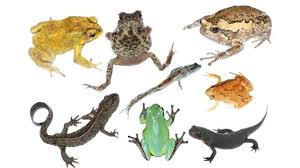
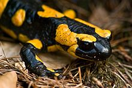
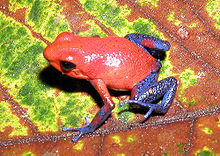
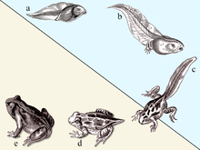

Definicion

Los anfibios son una clase de vertebrados anamniotas (sin amnios, como los peces), tetrápodos, ectotérmicos, con respiración
branquial durante la fase larvaria y pulmonar al alcanzar el estado adulto. A diferencia del resto de los vertebrados, se
distinguen por sufrir una transformación durante su desarrollo. (Este cambio puede ser drástico y se denomina metamorfosis).
Los anfibios fueron los primeros vertebrados en adaptarse a una vida semiterrestre, presentando en la actualidad una distribución
cosmopolita al encontrarse ejemplares en prácticamente todo el mundo, estando ausentes solo en las regiones árticas y antárticas,
en los desiertos más áridos y en la mayoría de las islas oceánicas. Hay descritas 7492 especies de anfibios.
Cumplen un rol ecológico vital respecto al transporte de energía desde el medio acuático al terrestre, así como a nivel trófico
al alimentarse en estado adulto, en gran medida, de artrópodos y otros invertebrados. Algunas especies de anfibios secretan a
través de la piel sustancias altamente tóxicas. Estas sustancias constituyen un sistema de defensa frente a los depredadores.
Evolución y sistematica
Tetrápodos
Los primeros tetrápodos se originaron a partir de un antepasado común entre estos y los peces de aletas lobuladas (sarcopterigios)
conservando aún agallas y escamas, pero que en lugar de aletas presentaban patas anchas y aplanadas con un gran número de dedos,
como es el caso de los ocho y siete en las especies de los géneros Acanthostega e Ichthyostega respectivamente. Los cambios y las
adaptaciones a la vida terrestre se siguieron suscitando, entre los cuales se pueden nombrar la evolución de una lengua viscosa y
protácil (empleada primordialmente en la captura de las presas), el desarrollo de glándulas cutáneas secretoras de veneno (como
método de defensa), párpados móviles y glándulas para la limpieza, protección y lubricación de los ojos; entre otras.
Existe un intenso debate en lo que respecta a la definición de "anfibio". La concepción clásica de anfibio, considerada hoy
parafilética, considera anfibios a todos los tetrápodos anamniotas (huevo no protegido por un amnios ni una cáscara). Según la
sistemática cladística, el concepto de anfibio es mucho más restringido e incluyen en este grupo solo a los anfibios modernos y
sus antepasados más cercanos, y a los amniotas y a sus antecesores más inmediatos.
Anfibios modernos

Las relaciones filogenéticas entre los tres grupos de lisanfibios han sido materia de debates y controversias por décadas.
Los primeros estudios de secuencias de DNA mitocondrial y DNA ribosomal nuclear sustentaban una relación cercana entre las
salamandras y las cecilias (grupo denominado Procera). Esta hipótesis ayudaba a explicar los patrones de distribución y el
registro fósil de los lisanfibios, dado el hecho de que las ranas están distribuidas en casi todos los continentes mientras
que las salamandras y las cecilias presentan una muy marcada distribución en regiones que alguna vez formaron parte de Laurasia
y Gondwana respectivamente. Los registros fósiles más antiguos de ranas (y de lisanfibios) datan del Triásico Inferior (~250 Ma)
de Madagascar (correspondiendo al género Triadobatrachus), mientras que los de las salamandras y las cecilias corresponden al
período Jurásico (~190 Ma). Sin embargo, los análisis posteriores y recientes en los que se han ocupado grandes bases de datos
tanto de genes nucleares como mitocondriales, o una combinación de ambos, establecen a las ranas y las salamandras como grupos
hermanos, cuyo clado es denominado Batrachia. Este grupo es reafirmado por estudios de datos morfológicos (incluyendo el de
especímenes fósiles).
Morfofisiología

La piel de los tres principales grupos de anfibios (anuros, caudados y gimnofiones) es estructuralmente similar (aunque a diferencia del resto de los anfibios,
los gimnofiones poseen escamas dérmicas), siendo permeable al agua, desnuda (no contiene ningún tipo de anexo tegumentario, como pelos o escamas), muy
vascularizada y está provista de una multitud de glándulas. Lleva a cabo una serie de funciones vitales en los anfibios al protegerlos contra la abrasión y
agentes patógenos, colaborar en la respiración (respiración cutánea), absorbiendo y liberando agua y contribuyendo por medio del cambio de pigmentaciones
(en algunas especies) y la secreción de sustancias a través de esta, al control de la temperatura corporal. Adicionalmente la piel actúa muchas veces como un
medio de defensa o disuasivo contra los depredadores, al poseer una serie de glándulas venenosas o pigmentaciones de advertencia.
En la piel se aprecia ya un carácter típico de los vertebrados terrestres, como lo es la presencia de capas externas muy cornificadas. La piel consta de varias
capas y se renueva periódicamente mediante un proceso de muda (siendo esta, por lo general, ingerida), el cual está controlado por la hipófisis y la tiroides.
Los engrosamientos locales son habituales, como es el caso de los anuros del género Bufo, como adaptación a una vida más terrestre.
Las glándulas cutáneas están más desarrolladas que en los peces, existiendo dos tipos: las glándulas mucosas y las glándulas venenosas. Las glándulas mucosas
secretan un mucus incoloro y líquido que previene la desecación y mantiene el equilibrio iónico. Se cree, además, que pueden presentar propiedades fungicidas y
bactericidas. Las glándulas venenosas tienen una función defensiva como respuesta a la depredación, ya que producen sustancias irritantes o venenosas.
El color de la piel de los anfibios está producido por tres capas de células pigmentarias o cromatóforos. Estas tres capas celulares corresponden a los melanóforos
(que ocupan la capa más profunda), los guanóforos (que forman una capa intermedia y contienen muchos gránulos que, por difracción, producen un color verdeazulado)
y los lipóforos (amarillos que constituyen la capa más superficial). El cambio de color que experimentan muchas especies está causada por secreciones de la hipófisis.
A diferencia de los peces óseos, no existe control directo del sistema nervioso sobre las células pigmentarias y, por lo tanto, el cambio de color es bastante lento.
Esqueleto
| Esqueleto |
| Nombre |
Descripcion |
| Cintura |
La cintura escapular de los primeros anfibios era casi idéntica a la de sus antecesores los osteolepiformes, salvo por la presencia de un nuevo hueso dérmico,
el interclavicular (que se ha perdido en los anfibios modernos). |
| Extremidades |
Los anuros y los urodelos presentan, por lo general, cuatro extremidades, mientras que las cecilias carecen de ellas. En la mayoría de los anuros las
extremidades traseras son alargadas como una adaptación para saltar y nadar. |
Aparato digestivo
La boca alcanza gran tamaño, estando, en ocasiones, provista de pequeños dientes débiles. La lengua es carnosa y en algunos grupos está sujeta por su parte anterior y libre por
detrás para que pueda ser proyectada al exterior y capturar las presas. Son animales engullidores, puesto que introducen en su tubo digestivo presas sin fragmentación previa.
La cloaca es una cavidad donde desembocan los aparatos digestivo, urinario y reproductor con un único orificio de salida al exterior; se presenta también en los reptiles y
en las aves.
Los anfibios poseen un par de fosas nasales que se comunican con la boca y las cuales están provistas de válvulas para impedir el ingreso de agua, contribuyendo, a su vez,
con la respiración pulmonar.
